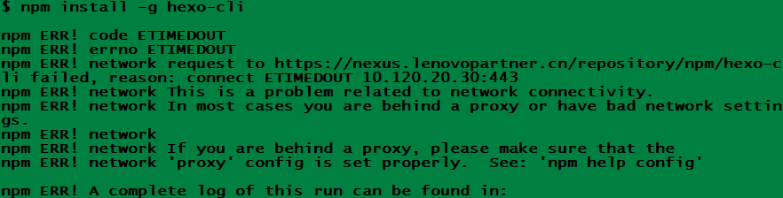
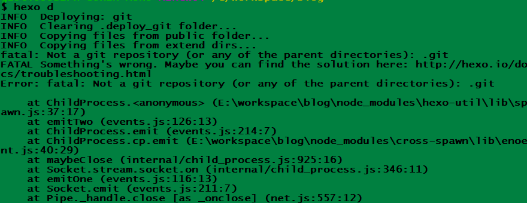

(原)Windows使用Hexo管理GitPage
本文重点
1 | 1 如何一步一步按顺序搭建一个可用的git page |
各类问题
1 | 安装问题 |
账号准备
1 | 1 github |
环境准备
1 | windows |
hexo目录
1 | 1 安装 |
安装
- 官方文档
- 安装前提
安装 Hexo 相当简单。然而在安装前，您必须检查电脑中是否已安装下列应用程序：
Node.js
Git 安装 Hexo
所有必备的应用程序安装完成后，即可使用如下 npm 命令安装 Hexo。1
$ npm install -g hexo-cli
报错
- 1.网络问题如下图，解决办法：换为国内源
1
2
3
4
5
6// 1.安装
$ npm install express --registry=https://registry.npm.taobao.org
// 2.设置
$ npm config set registry https://registry.npm.taobao.org
// 3.验证
$ npm config get registry
- 1.网络问题如下图，解决办法：换为国内源
安装 Hexo 插件
1
2
3
4
5
6
7
8$ npm install hexo-generator-index --save #索引生成器
$ npm install hexo-generator-archive --save #归档生成器
$ npm install hexo-generator-category --save #分类生成器
$ npm install hexo-generator-tag --save #标签生成器
$ npm install hexo-server --save #本地服务
$ npm install hexo-deployer-git --save #hexo通过git发布（必装）
$ npm install hexo-renderer-marked --save #渲染器
$ npm install hexo-renderer-stylus --save #渲染器
配置
标准部署
1
2
3
4deploy:
type: git
repo: git@github.com:yoursite/project.git
branch: master- 注意
type: git 不要写成 type: github
- 注意
-
1
post_asset_folder: true
- 图片位置
source\_posts\pic.jpg - 写法举例
1

- 图片位置
-
1
2url: https://yoursite.github.io/project/
root: /project/- GitHub Pages的分类及区别
根据官方文档，GitHub Pages分为两类：
个人/组织主页(yoursite)以及项目主页(project)
- GitHub Pages的分类及区别
-
1
2
3
4
5
6deploy:
type: git
message: "hexo deploy generated pages"
repo:
github: <github repo url>
gitcafe: <gitcafe repo url>
使用
1 | $ hexo n == hexo new "blogname" # 新建文章 |
部署
第一次发布可能会有10分钟的延迟。
报错
原因：更新主题等导致
解决：再执行一次1
$ npm install hexo-deployer-git --save
报错

原因：缺少.git文件夹
解决：1
2
3
4// 第一次操作
$ git init
// 远程已有对应仓库
$ git clone